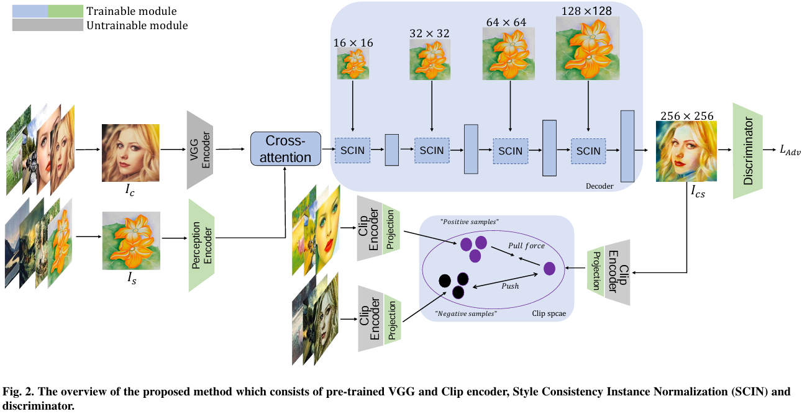
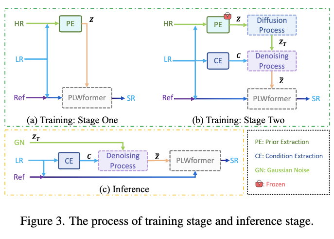

|
Zhanjie Zhang I am a Ph.D. candidate at Zhejiang University in Hangzhou, where I work on text-to-image, image-to-image, image restoration, and neural rendering. I am currently serving as a conference or journal reviewer including: ACM MM, TMM, IJCAI, BIBM. Please feel free to email me via cszzj@zju.edu.cn. Google Scholar / CV / Github |
Selected Publications |

|
ArtBank: Artistic Style Transfer with Pre-trained Diffusion Model and Implicit
Style Prompt Bank
Zhanjie Zhang, Quanwei Zhang, Wei Xing, Guangyuan Li, Jiakai Sun, Zehua Lan, Junsheng Luan, Yiling Huang, Huaizhong Lin AAAI, 2024 Code / Paper |
|
|
Towards Highly Realistic Artistic Style Transfer via Stable Diffusion with Step-aware and Layer-aware Prompt
Zhanjie Zhang, Quanwei Zhang, Huaizhong Lin, Wei Xing, Juncheng Mo, Shuaicheng Huang, Jinheng Xie, Guangyuan Li, Junsheng Luan, Lei Zhao IJCAI, 2024 Code / Paper |
|

|
Rethink arbitrary style transfer with transformer and contrastive learning
Zhanjie Zhang, Jiakai Sun, Guangyuan Li, Lei Zhao, Quanwei Zhang, Zehua Lan, Haolin Yin, Wei Xing, Huaizhong Lin, Zhiwen Zuo CVIU, 2024 / Paper |
|
|
Caster: Cartoon style transfer via dynamic cartoon style casting
Zhanjie Zhang, Jiakai Sun, Jiafu Chen, Lei Zhao, Boyan Ji, Zehua Lan, Guangyuan Li, Wei Xing, Duanqing Xu Nuerocomputing, 2023 / Paper |
|

|
Rethinking Diffusion Model for Multi-Contrast MRI Super-Resolution
Guangyuan Li, Chen Rao, Juncheng Mo, Zhanjie Zhang, Wei Xing, Lei Zhao CVPR, 2024 Code / Paper |

|
3DGStream: On-the-Fly Training of 3D Gaussians for Efficient Streaming of Photo-Realistic Free-Viewpoint Videos
Jiakai Sun, Han Jiao, Guangyuan Li, Zhanjie Zhang, Lei Zhao, Wei Xing CVPR, 2024 Code / Paper |

|
Self-Reference Image Super-Resolution via Pre-trained Diffusion Large Model and Window Adjustable Transformer
Guangyuan Li, Wei Xing, Lei Zhao, Zehua Lan, Jiakai Sun, Zhanjie Zhang, Quanwei Zhang, Huaizhong Lin, Zhijie Lin ACM MM, 2023 Code / Paper |

|
DuDoINet: Dual-Domain Implicit Network for Multi-Modality MR Image Arbitrary-scale Super-Resolution
Guangyuan Li, Wei Xing, Lei Zhao, Zehua Lan, Zhanjie Zhang, Jiakai Sun, Haolin Yin, Huaizhong Lin, Zhijie Lin ACM MM, 2023 Paper |

|
Rethinking Multi-Contrast MRI Super-Resolution: Rectangle-Window Cross-Attention Transformer and Arbitrary-Scale Upsampling
Guangyuan Li, Lei Zhao, Jiakai Sun, Zehua Lan, Zhanjie Zhang, Jiafu Chen, Zhijie Lin, Huaizhong Lin, Wei Xing ICCV, 2023 Code / Paper |
|
|
VGOS: Voxel Grid Optimization for View Synthesis from Sparse Inputs
Jiakai Sun, Zhanjie Zhang, Jiafu Chen, Guangyuan Li, Boyan Ji, Lei Zhao, Wei Xing IJCAI, 2023 Code / Paper |
|
|